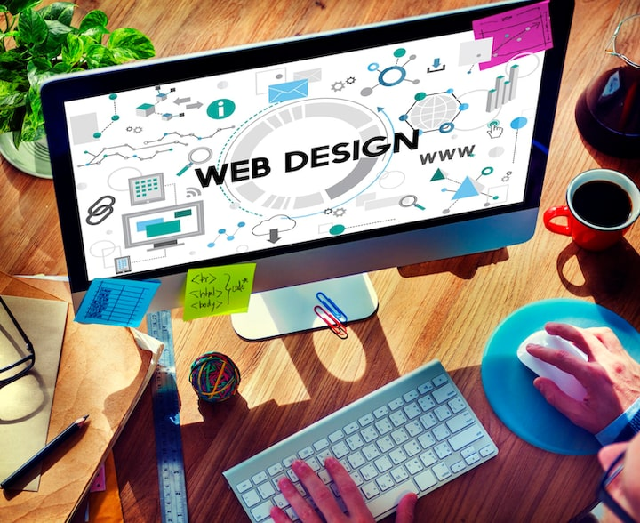
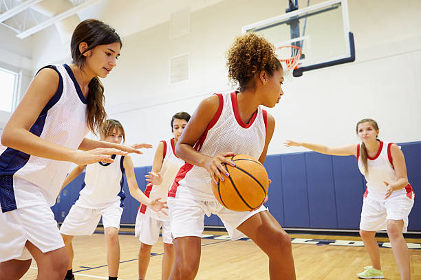
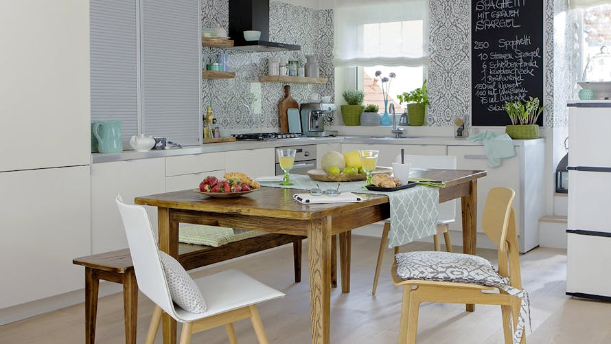

Mes Passions
La lecture
la lecture est une activité très important pour moi, elle me permet de découvrir de nouvelles histoires , d'apprendre de nouvelles choses et de développer mon imagination.

Développement Web
Le développement web est une passion qui me permet de créer, d’innover et de résoudre des problèmes. J’aime concevoir des interfaces modernes et apprendre de nouvelles technologies pour améliorer mes compétences.

basketball
le basketball est un sport que j'aime beaucoup, il me permet de rester en bonne santé et de développer mon esprit d'équipe quand je joue, je me sens motivé et énergetique, j'aime marquer des paniers et jouer avec mes amis

la cuisine
la cuisine est une activité que j'apprécie beaucoup, j'aime préparer des repas et decouvrir de nouvelles recettes. La cuisine me permet d'etre créatif et de faire plaisir aux autres, j'aime cuisiner pour ma famille et mes amis